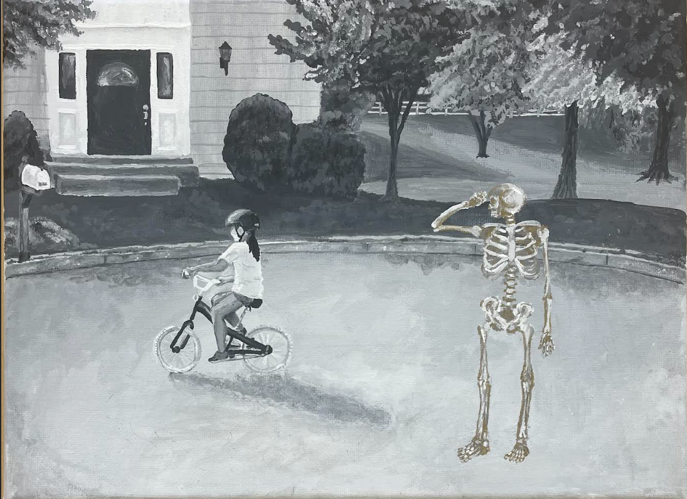
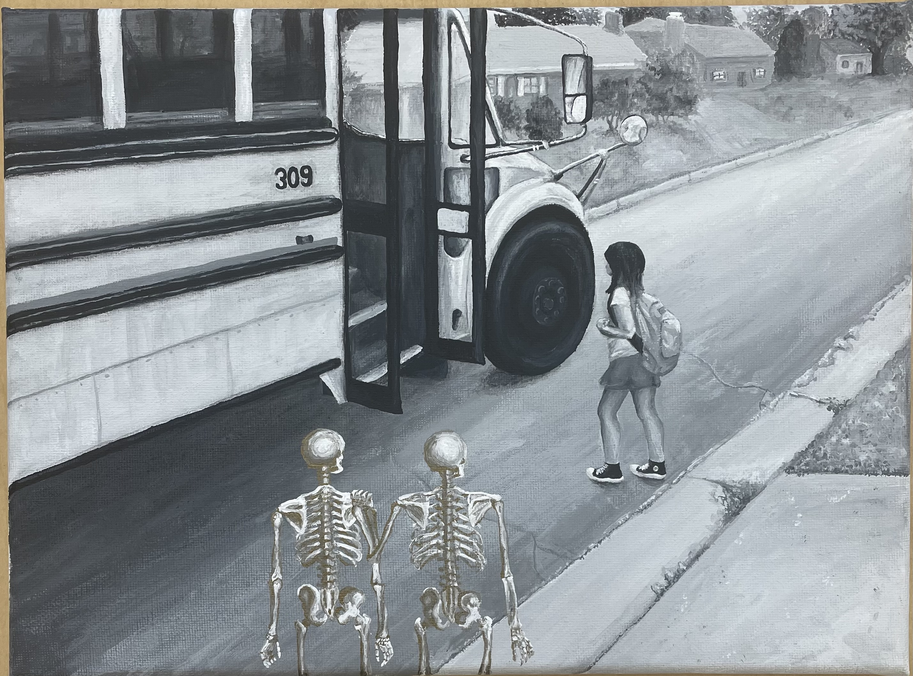
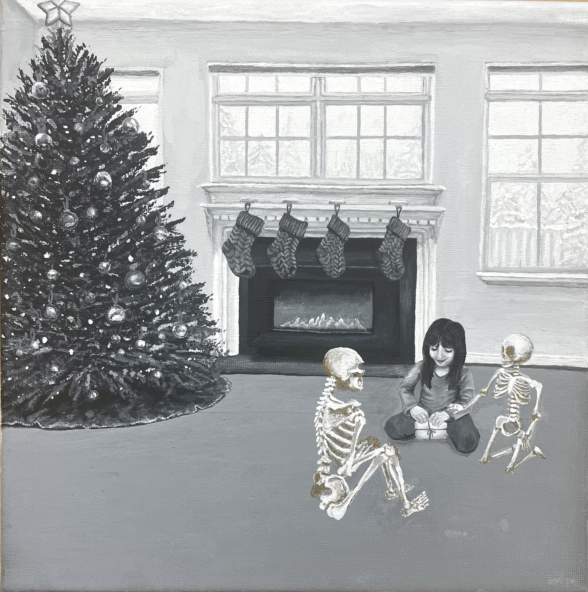
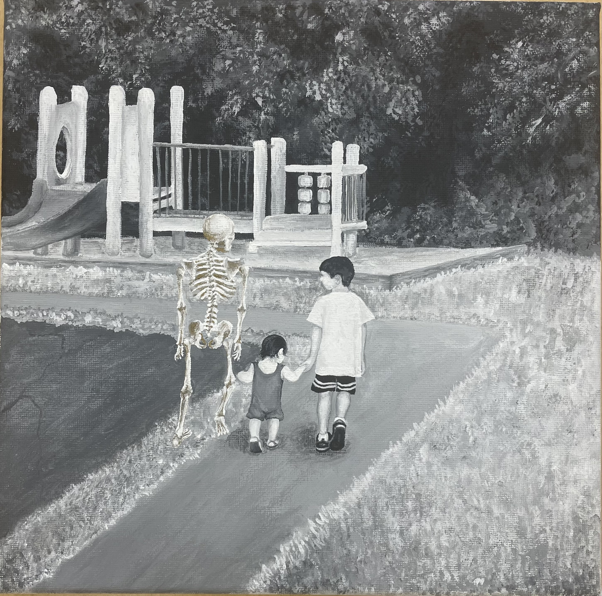
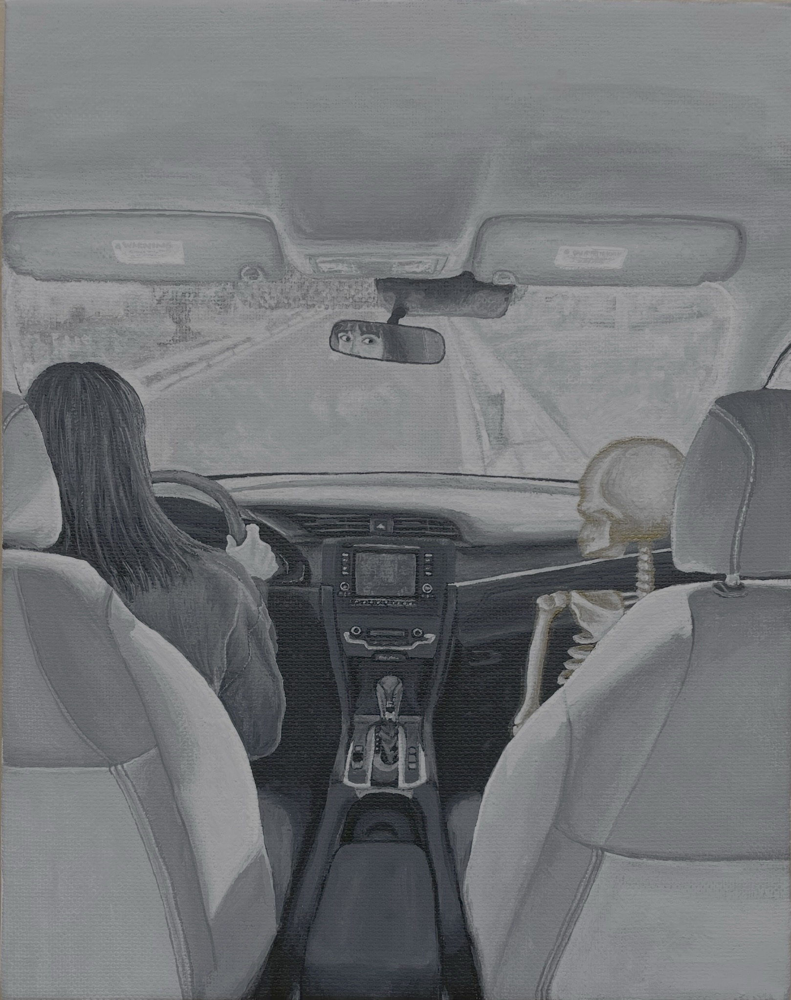
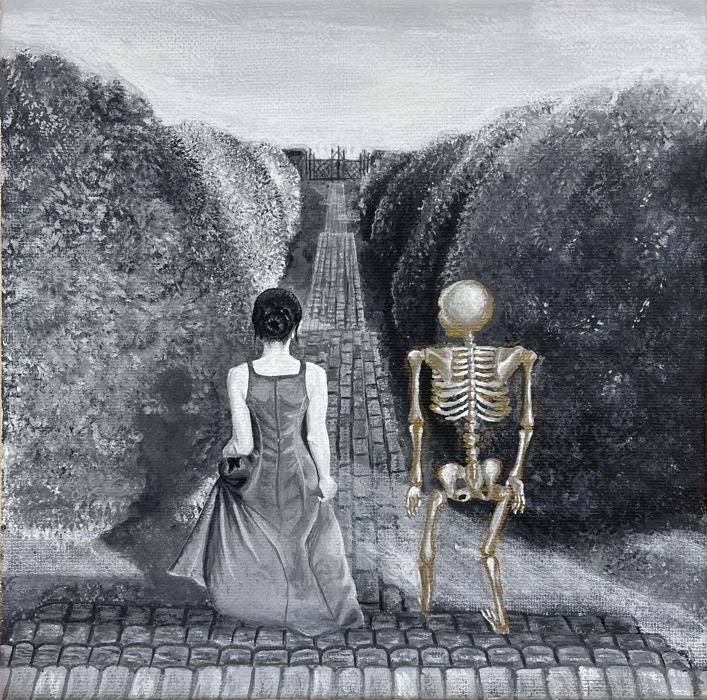
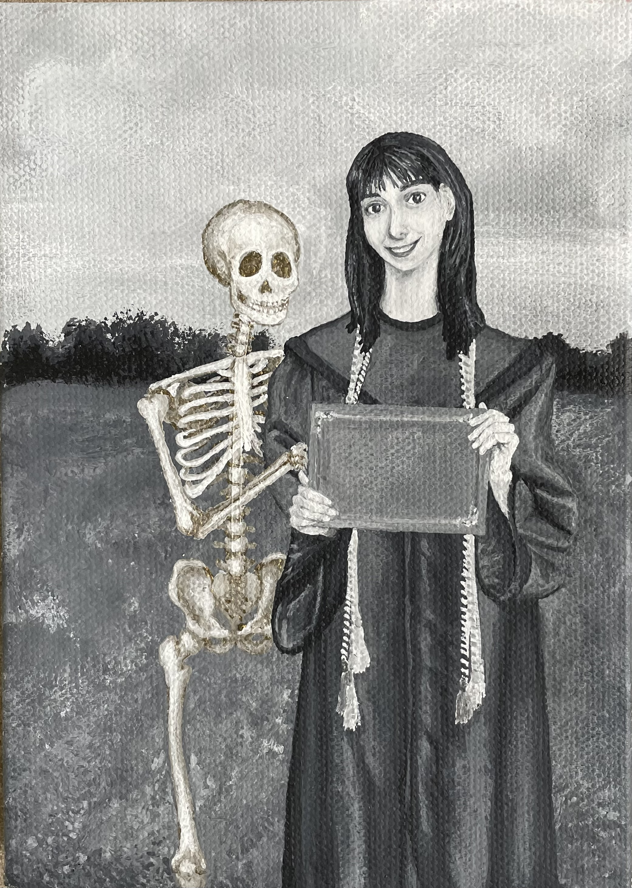

Throughout my portfolio I explored the questions of "how are my deceased ansestors present in my life?"
I explored specific milestones in my life where family was my biggest support and joy as well as how their presence feels stronger in different moments.

Watcher
Acrylic on Canvas
Represents the milestone of learning to ride a bike.The turned away figure and static feeling skeleton represents just a hint of a feeling that is not strong.

Supporters
Acrylic on Canvas
Depicts my first day of school, and how the presence and support of family members can be calming.The Skeletons are now in the girl's perepheral vision. This hints at a stronger feeling of their presence.

Celebrants
Acrylic on Canvas
This is a moment from the holiday season. Not being with those you love can be especally challenging suring this season.The contact mad between the skeleton and the girl represents a strong feeling of their pesence.

Guide
Acrylic on Canvas
This represents my first steps as well as the early developmental stages.The inclusion of a second person was a way of questioning if the feeling of their presence could be shared.

Protecter
Acrylic on Canvas
This moment is from my first time driving alone, and the need I felt for protection being a less experience driver.The eye contact between the Skeleton and girl represents an acknowledgement and acceptance of the feeling of them being there.

Admirer
Acrylic on Canvas
This image represents Prom, but more specifically my hope that my loved ones celebrated with me and felt proud to call me their descendant.The easiness in which the two figures watch together represents feeling peace in their presence.

Friend
Acrylic on Canvas
My final piece was of my graduation from high school. The Skeletons are now in the girl's perepheral vision. This hints at a stronger feeling of their presence.